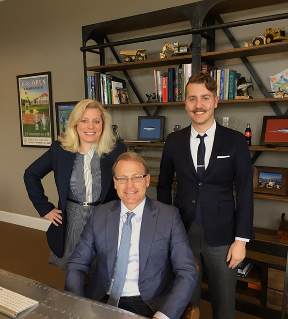

The people
People who
know the rails.
We came up through Class I railroads. We inspect to the same standard we operated under — because we are the people who used to enforce it.
01
Basil Polivka II
PresidentThird generation in the family trade. He set the standard the reports are written to: every finding cited to its section, located to the foot, and signed by the person who found it — on the principle that a report you would not put your name to is not worth handing to a railroad.
02
Michael Small
VP, Track Inspections & MaintenanceTwenty years across heavy manufacturing and Class I railroad operations — a combination that gives him an unusually complete picture of what industrial track owners are up against. He understands the production pressures that make downtime expensive and the regulatory standards that make shortcuts dangerous. He leads inspection programs and maintenance oversight with the discipline he developed on the Class I side.
03
Senior inspection team
FRA-certified field inspectorsFormer Class I track supervisors and roadmasters who retired out of operations and came to inspection. They know what a railroad track department expects because they wrote those expectations. Each carries FRA Part 213 certification and a minimum of fifteen years in the field.
04
Operations & coordination
Scheduling, reporting & client servicesFrom the first call to the final sign-off, operations keeps the job moving. They coordinate track windows with Class I dispatchers, manage site access, and make sure the written report arrives promptly and in a form your maintenance crew can act on without translation.
Weddington, North Carolina
Everyone here walked
track before they wrote
about it.

“Hard work was instilled into the bones of the Polivka family.”
Carpathian Rusyn Pittsburgh → Ohio, 1946 → Weddington, N.C.